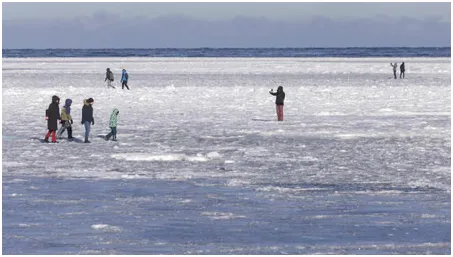
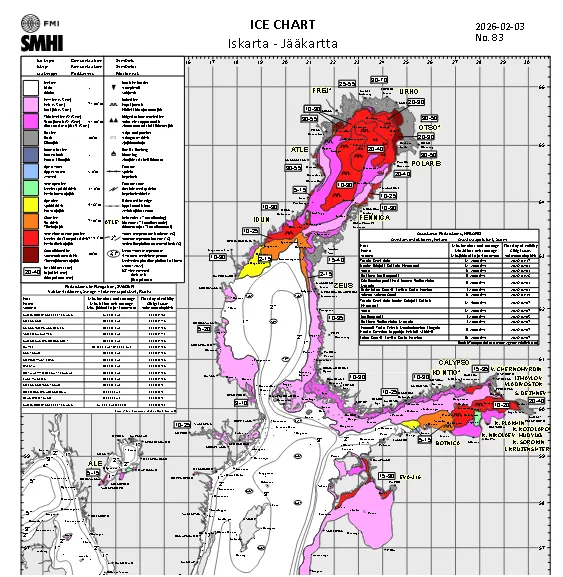
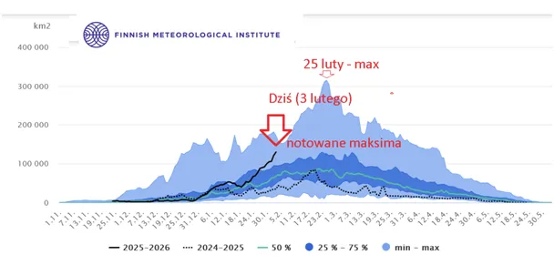

Bałtycki Neptun wie na 100% jaki mamy klimat.
Lody oceaniczne wokół biegunów Ziemi są podatne na potężne prądy morskie i niewiele mówią o temperaturach atmosfery. Po pierwsze, co roku inaczej poruszają się wraz z tymi prądami, a po drugie są przez nie topione szybciej lub wolniej w zależności od kombinacji temperatury wód w tych prądach.

Inaczej jest z Bałtykiem, to zamknięty zbiornik, realnie słodkie jezioro w 100% prawdziwie odpowiada na pytanie, jaką w danym roku w tym rejonie mamy zimę. Czarna kreska nie pozostawia złudzeń, zbliżamy się do granic maksimum, jakie przyroda wyznaczała w przeszłości i już za 3 tygodnie przekonamy się, czy nie nastąpi opóźnienie w zakończeniu okresu schładzania akwenu, bo tak to wygląda na mapach synoptycznych.

Dla regionu prognozy są bardzo mroźne, nie dotrą nawet nad Bałtyk Południowy najbliższe odwilże. Czekamy więc na klangor i zapewnienie, że to skutek globalnego ocieplenia, podobnie jak już kolejna fala mrozów w południowych stanach USA.
Paweł Klimczewski